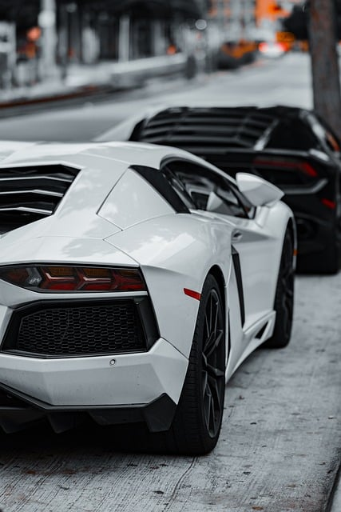
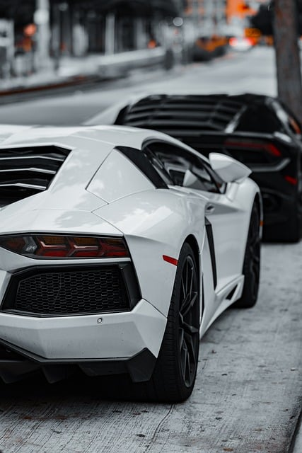
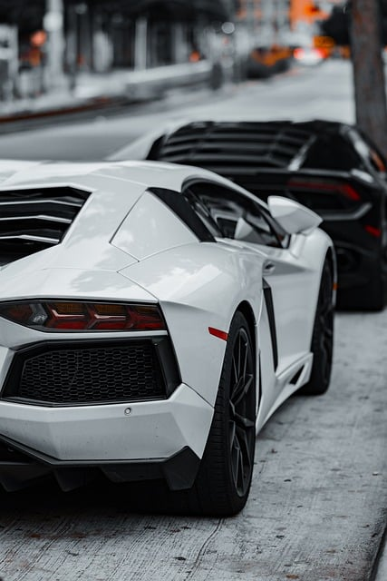

Welcome to our car gallery, a space dedicated to all types of vehicles, from the most traditional and iconic models to today's most sophisticated and innovative machines. Here, we celebrate the diversity of the automotive world, showing the evolution of cars over the decades and how they have become part of our daily lives, our dreams and our culture. We start with the classics, like the eternal Beetle, a symbol of simplicity and functionality that has won over generations around the world. This compact car, with its unmistakable design and captivating personality, has transcended time and become one of the most beloved vehicles of all time. The Beetle represents accessibility and the joy of driving, being a milestone in the history of the automotive industry for its reliability and unique style. Advancing on our journey, we find models that marked the transition to an era of comfort, performance and modernity. Cars like the Ford Mustang, the Chevrolet Camaro and the Volkswagen Golf GTI brought the perfect combination of power, style and innovation, winning over enthusiasts in all parts of the world. These vehicles show how the evolution of engines and safety and comfort technologies has changed the way we drive and interact with our cars.
